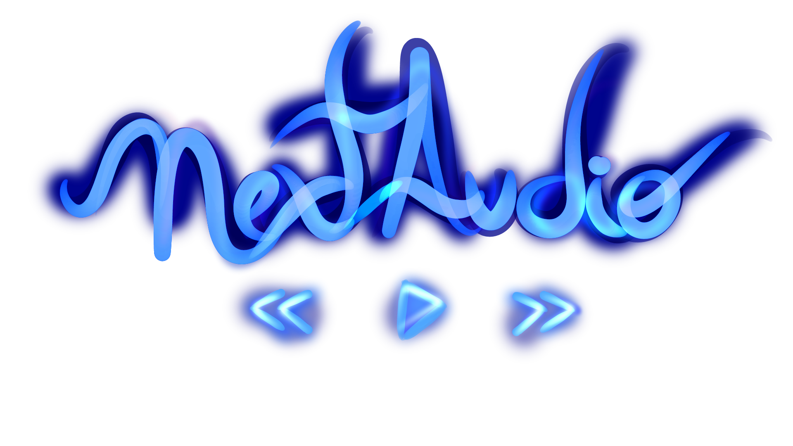

NextAudio Documentation
NextAudio is a library focused in audio operations like encoding, decoding, muxing, demuxing, resampling, etc.
It's designed to be to simple to use, but with streaming support and high performance.
Getting Started
If this is your first time using NextAudio, proceed to the Introduction in articles section.
If you wanna see all objects provided by this library you can access the API Documentation.
Features
Basic features
- High performance, low memory allocation with
Span<T>,Memory<T>,ArrayPooland lower GC pressure withValueTask. - Fully Sync and Async support.
- Per audio frame reading/writing.
- Logging with
Microsoft.Extensions.Logging. - Symbols debugging (
.snupkg).
Containers demuxing support:
- Matroska (.mkv/.webm)
Goals
OBS: Goals will change as new lib versions come out.
Audio stream providers support:
- File (current supported by
AudioStream.CreateFromFile) - Http (current supported by
AudioStream.CreateFromStreambut is not persistent) - Youtube
Containers demuxing support:
- Ogg (.ogg/.ogv/.oga/.ogx)
- Wav (.wav/.wave)
- MPEG-4 Part 14 (.mp4)
- Flac (.flac)
Decoders support:
- Opus (.opus)
- Vorbis (.ogg/.oga)
- AAC (.m4a/.m4b/.m4p/.m4v/.m4r/.aac/.3gp/.mp4)
- MPEG-1/2 Audio Layer 3 (.mp3/.mp4)
Encoders support:
- Opus (.opus)
Containers probe support:
- Matroska (.mkv/.webm)
- Ogg (.ogg/.ogv/.oga/.ogx)
- Wav (.wav/.wave)
- MPEG-4 Part 14 (.mp4)
- Flac (.flac)
Others audio operations
- Seeking (by timestamp)
- Volume
- Resampling
- Mono to Stereo
Others
- Package with all lib individual components
- Audio Pipelines (less complexity when wanna a specific output format)
- Support for
Microsoft.Extensions.DependencyInjection - Writing to output formats (
PipelineWriter/Stream) - An Audio Player structure to control play/queue/pause/seek/volume operations
Source and License
NextAudio is licensed under MIT License.
The repository containing the source code for this library is in Github.
NextAudio is built by renanrcp.
This page was last modified at 10/22/2022 01:51:59 -03:00 (UTC).
Commit Message
Author: Renan Pinheiro
Commit: 46c35686920505bf3d0d850d628048de2b92c836
Write docs guides (#82)
* feat: add initial doc files
* feat: docs
- some fixes in css
- remove theme switcher
- articles and glossary section
- articles/introduction page
* feat: add getting started section
* feat: add matroska doc
* feat: write glossary
* fix: break lines in matroska thanks and references
* fix: typos and grammal errors